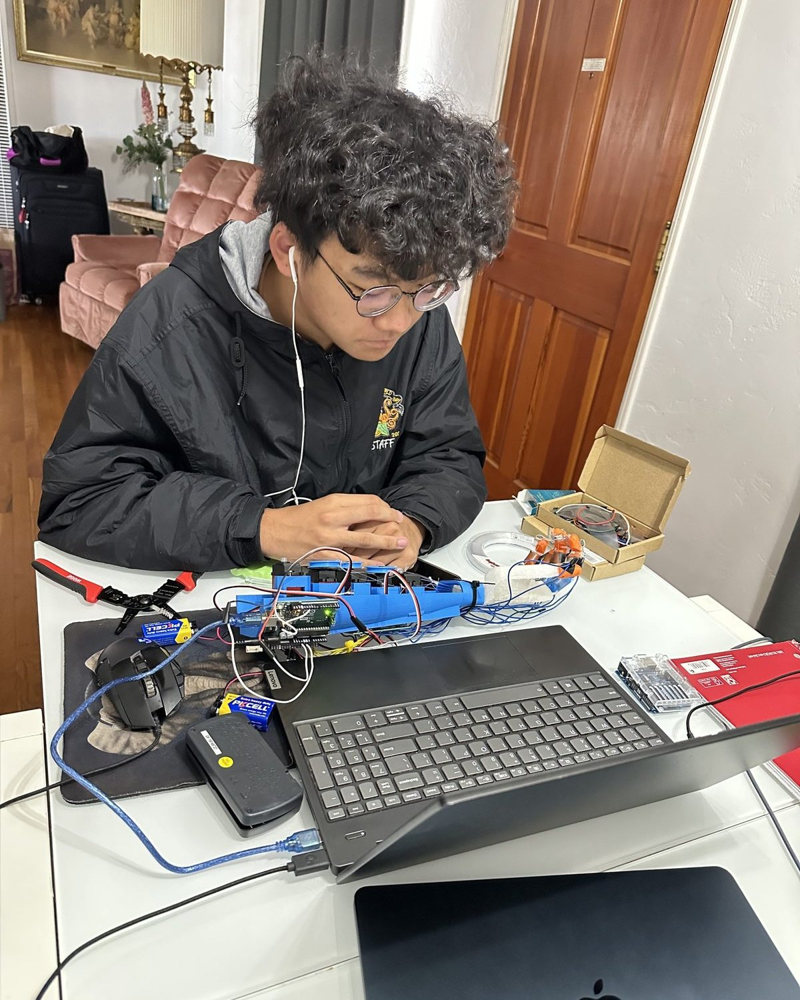
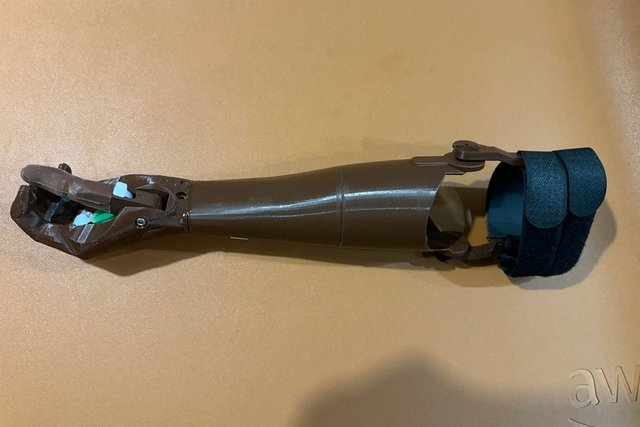
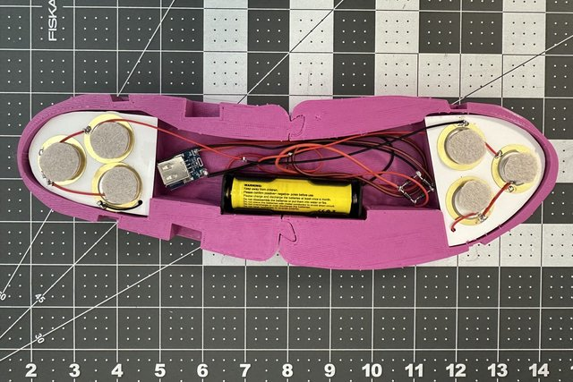
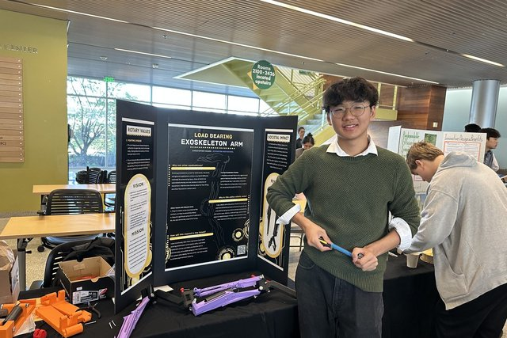

Christopher Huang
High school engineer building low-cost prosthetics, sensing hands, and things that print.
I'm a senior at Irvington High School in Fremont, CA. I design and 3D print assistive devices, run a volunteer prosthetics chapter, and publish research on additive manufacturing and sensor-integrated hands. Eagle Scout. I also take pictures and build in Minecraft.

Selected work

Big Hands e-NABLE Fremont
Founder & President · Dec 2025 – present
I founded a chapter of the global e-NABLE network that designs and 3D prints free prostheses for the limb-different community.

Kinetic Energy Harvesting Shoe Sole
Rotary Young Innovators 3D Printing Challenge finalist · 2025
A 3D-printed shoe sole with embedded piezoelectric discs that harvests the energy of walking into a rechargeable battery.

Load-Bearing Upper Body Exoskeleton
Central California Invention Convention & Rotary 3D Printing Challenge finalist · 2026
A passive upper-body exoskeleton that supports safe manual handling and improves ergonomic performance in high-strain environments.
Research
- Artificial Intelligence Driven Design and Geometry Optimization in Additive ManufacturingNational High School Journal of Science (NHSJS) · Passed peer review, July 2026
- Additive Manufacturing of an Anthropomorphic Hand using Force Resistive Sensors for Object DetectionJournal of Future Science and Engineering (JFSE) · Submitted August 2026, in review
- Measure Before You Reconstruct: Remote Measurement of Residual-Limb Circumference from Sparse Smartphone SilhouettesManuscript in preparation · Authoring, fall 2026
- Evaluating Radicalization through Autism Diagnosis Criteria and Media AddictionUCSB Summer Research Academies, Track 12 “Digital Brains” · Completed, Summer 2025